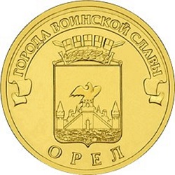
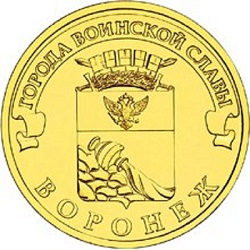

- unc

10 рублей 2010 65 лет Победы
Стоимость: 200 ₽В коллекции: 1 шт - unc
10 рублей 2011 Космос
Стоимость: 90 ₽В коллекции: 5 шт - unc
10 рублей 2011 Белгород
Стоимость: 140 ₽В коллекции: 2 шт - unc
10 рублей 2011 Курск
Стоимость: 100 ₽В коллекции: 1 шт - unc
 10 рублей 2011 Орёл
Стоимость: 150 ₽В коллекции: 1 шт - unc
10 рублей 2011 Владикавказ
Стоимость: 100 ₽В коллекции: 0 шт - unc
10 рублей 2011 Малгобек
Стоимость: 100 ₽В коллекции: 2 шт - unc
10 рублей 2011 Ржев
Стоимость: 100 ₽В коллекции: 1 шт - unc
10 рублей 2011 Ельня
Стоимость: 150 ₽В коллекции: 1 шт - unc
10 рублей 2011 Елец
Стоимость: 190 ₽В коллекции: 0 шт - unc
10 рублей 2012 Государственность
Стоимость: 70 ₽В коллекции: 0 шт - unc
10 рублей 2012 Арка
Стоимость: 90 ₽В коллекции: 1 шт - unc
 10 рублей 2012 Воронеж
Стоимость: 90 ₽В коллекции: 0 шт - unc
10 рублей 2012 Луга
Стоимость: 90 ₽В коллекции: 0 шт - unc
10 рублей 2012 Полярный
Стоимость: 90 ₽В коллекции: 0 шт - unc
10 рублей 2012 Ростов-на-Дону
Стоимость: 80 ₽В коллекции: 0 шт - unc

10 рублей 2012 Туапсе
Стоимость: 70 ₽В коллекции: 0 шт - unc
10 рублей 2012 Великие Луки
Стоимость: 70 ₽В коллекции: 0 шт - unc
10 рублей 2012 Великий Новгород
Стоимость: 19 ₽В коллекции: 1 шт - unc
10 рублей 2012 Дмитров
Стоимость: 60 ₽В коллекции: 1 шт - unc
10 рублей 2013 Сталинград
Стоимость: 40 ₽В коллекции: 0 шт - unc
10 рублей 2013 Логотип Универсиады
Стоимость: 70 ₽В коллекции: 0 шт - unc
10 рублей 2013 Талисман Универсиады
Стоимость: 70 ₽В коллекции: 0 шт - unc
10 рублей 2013 Вязьма
Стоимость: 40 ₽В коллекции: 0 шт - unc
10 рублей 2013 Кронштадт
Стоимость: 40 ₽В коллекции: 1 шт - unc
10 рублей 2013 Наро-Фоминск
Стоимость: 40 ₽В коллекции: 0 шт - unc
10 рублей 2013 Псков
Стоимость: 40 ₽В коллекции: 0 шт - unc
10 рублей 2013 Козельск
Стоимость: 40 ₽В коллекции: 1 шт - unc
10 рублей 2013 Архангельск
Стоимость: 40 ₽В коллекции: 1 шт - unc
10 рублей 2013 Волоколамск
Стоимость: 40 ₽В коллекции: 0 шт - unc
10 рублей 2013 Брянск
Стоимость: 40 ₽В коллекции: 0 шт - unc
10 рублей 2013 Брянск
Стоимость: 40 ₽В коллекции: 0 шт
- Россия
- Юбилейные
- 10 рублей 2010-2022гг.(сталь с латунным гальваническим покрытием)